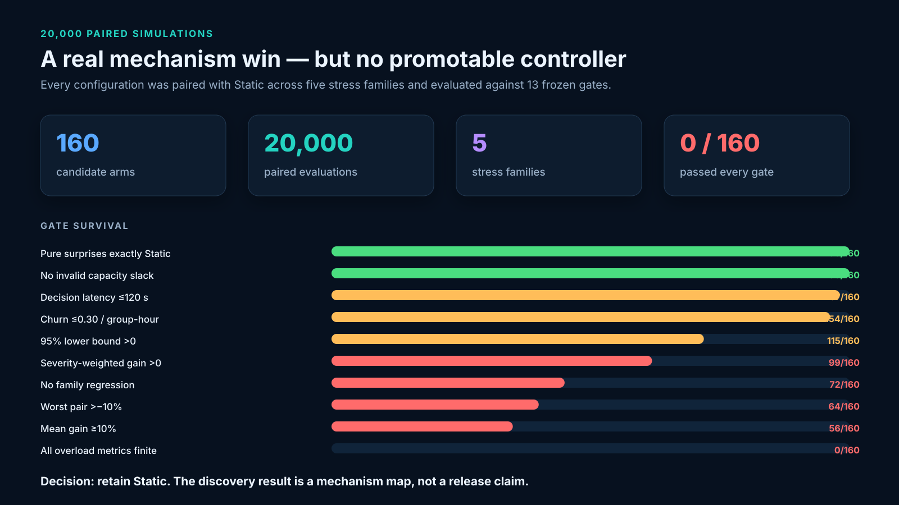
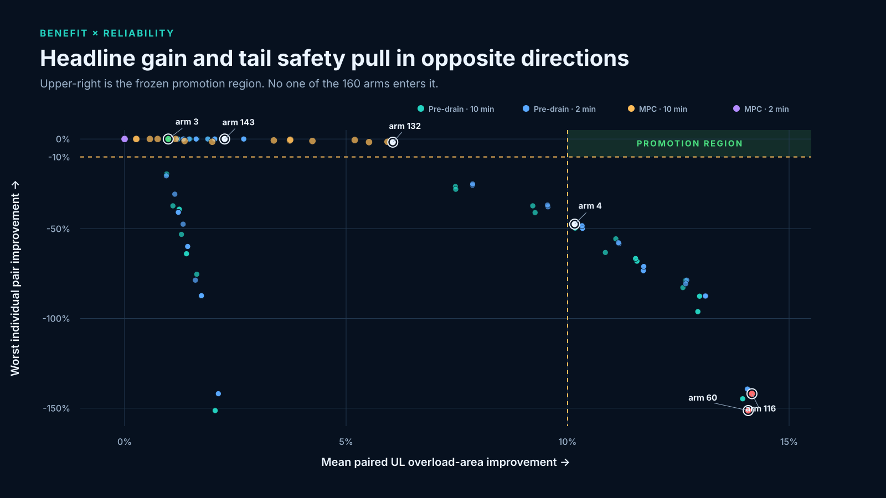
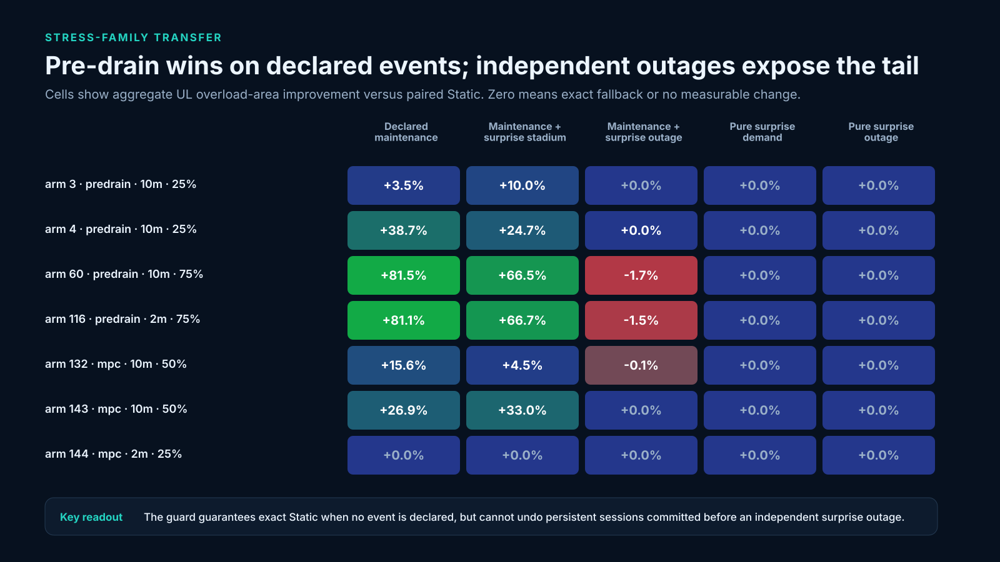
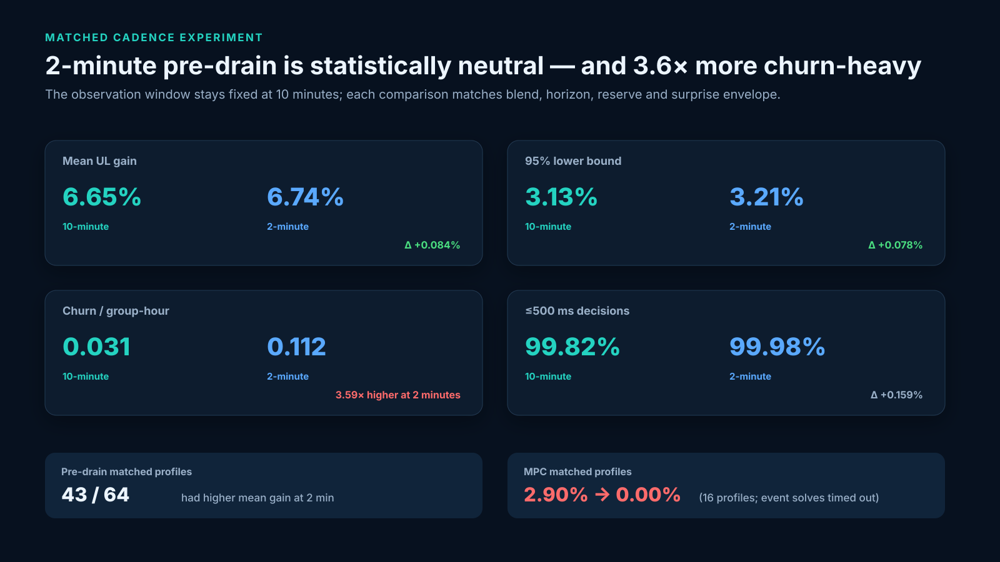
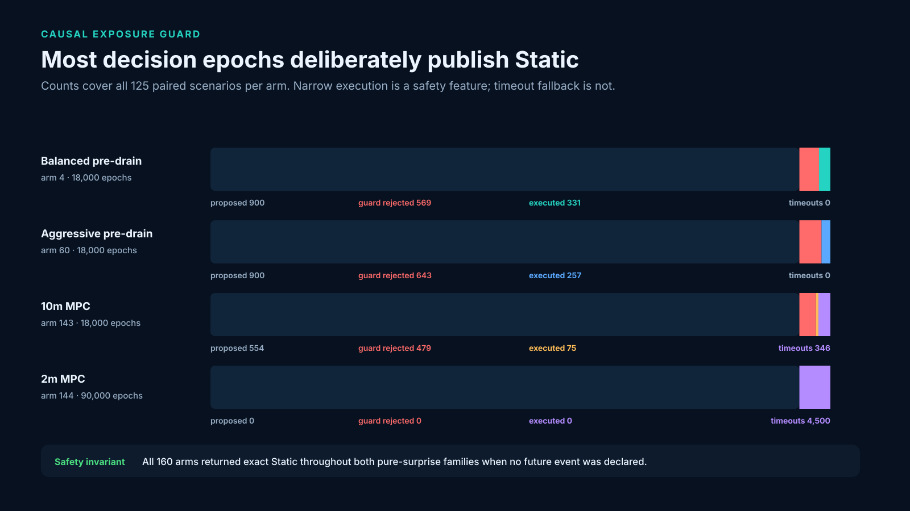
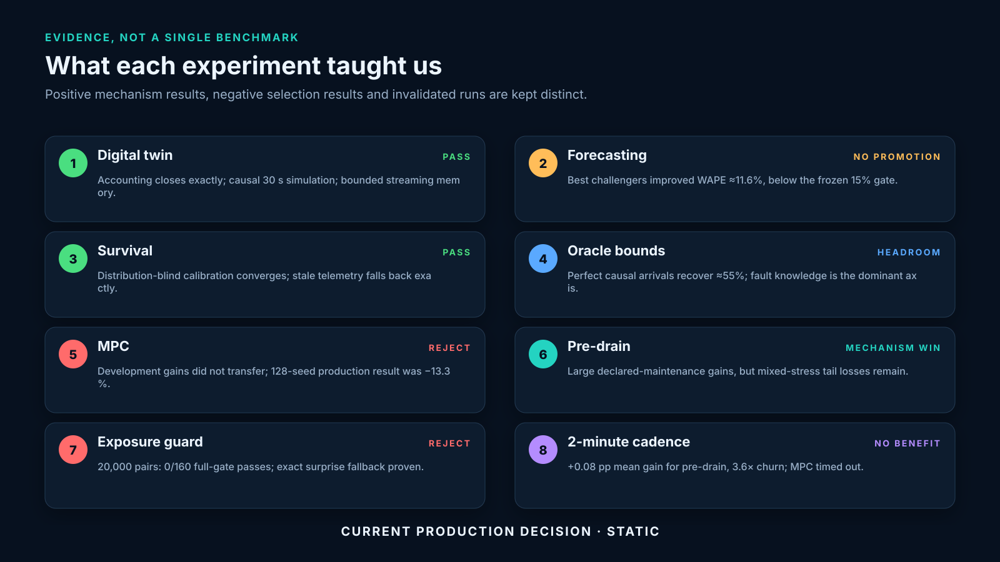

The experiments found the opportunity — and the safety boundary.
20,000 paired mixed-stress evaluations confirm strong declared-maintenance gains, exact Static fallback for pure surprises, and no configuration that clears the complete release gate. The detailed audit is in REPORT.md.
Campaign verdict

Benefit × tail risk

Stress-family transfer

Cadence comparison

Guard action funnel

Experiment journey
